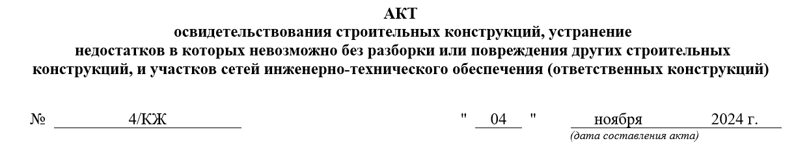
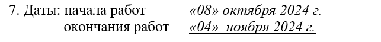
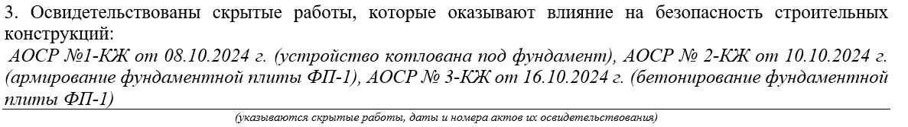
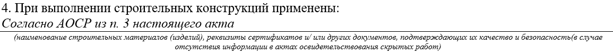
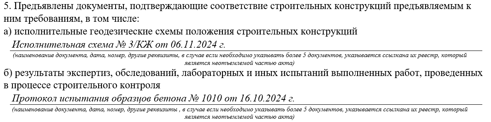
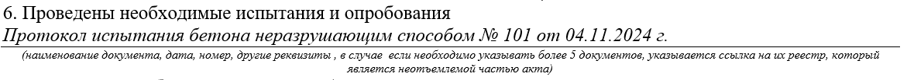
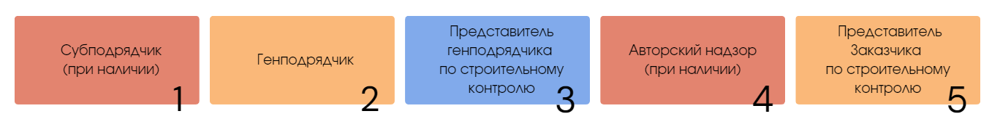

Простой способ составить акт освидетельствования ответственных конструкций (АООК)

Что такое ответственные конструкции
Посмотрите видео и вспомните, что такое ответственные конструкции и АООК.
Источник и ограничения: видеоблок платформы не содержит открытого адреса файла.
Цель АООК — разрешить нагружать конструкции или использовать их по назначению.
Для освидетельствования комплекса работ, например, нулевого цикла (рытье котлована, устройство основания, бетонная подготовка, и т.д.) составляют акты освидетельствования скрытых работ на каждую скрытую работу. Дальше на основании составленных АОСР оформляют АООК и принимается весь фундамент (этап работ). В этом случае фундамент является ответственной конструкцией (так как чтобы исправить недостатки в фундаменте, нужно разобрать то, что на нем стоит и опирается: стены, колонны, опоры и т.д. (ч.4 ГрК РФ)).
Смотрите в памятке ниже, где именно устанавливаются перечни таких работ.
Как составить АООК
Бланк АООК представляет собой двусторонний документ формата А4. Рекомендуемая форма АООК – приложение «4» Приказа Минстроя России от 16.05.2023 № 344/пр. Условно АООК можно разделить на пять блоков. Смотрите ниже на образцах с подсказками, как заполнить каждый раздел акта.
Блок 1. Шапка бланка
Встроенный материал · статическое представление
Исходная страница. Проверка ответов и анимация работают только онлайн.

Впишите наименование объекта и его адрес так, как это указано в штампах и на титульных листах проектной документации. Если данных нет, возьмите наименование из договора подряда.
Впишите данные лица, которое является заказчиком по договору подряда. Застройщик может передать свои функции техническому заказчику. В зависимости от вида работ может фигурировать, например, региональный оператор
Внесите данные лица, которое является подрядчиком по договору подряда. В случае, если им привлекаются сторонние организации (иные лица по ГрК РФ), то он становится генподрядчиком.
Впишите данные разработчика проектной документации
Реквизиты саморегулируемых организаций заполните, если требуется членство в СРО (случаи, когда членство в СРО не требуется установлены в ч. 4.1ст. 48,ч. 2.2ст. 52 ГрК РФ).
Обязательно согласуйте образец заполнения акта со строительным контролем заказчика перед тем как напечатать акты
Блок 2. Номер акта и дата подписания
Каждому акту присваивается индивидуальный номер, который вносится в реестр исполнительной документации. Номер может быть любым, главное, чтобы не повторялся. Может быть сквозная нумерация (1,2,3..), а может по разделам проекта (1-КЖ, 2-КЖ..). В случае, если сложная нумерация, то может добавиться еще номер корпуса (1-КЖ-1, 2-КЖ-1..). Очень удобный метод систематизации — это указание совместно с номером акта раздела проекта, например, 1-КЖ. Где 1 – порядковый номер, КЖ – шифр проекта.

Дата окончания работ и дата подписания акта – это один и тот же день, но не всегда. В случае с бетонными работами дата освидетельствования наступает, например, только на седьмые сутки, при достижении бетона 70% прочности и получении протокола от лаборатории. Если были замечания во время освидетельствования, то акт подписывается только после устранения замечаний.

Даты выполнения работ обязательно должны соответствовать датам в общем журнале работ. Дата подписания не может быть раньше даты окончания работы. Также, дата окончания и дата подписания не должны быть позже даты начала последующих работы
Блок 3. Состав комиссии, участвующей в освидетельствовании ответственных конструкций
Встроенный материал · статическое представление
Исходная страница. Проверка ответов и анимация работают только онлайн.

Внесите данные представителя заказчика. Если строительный контроль со стороны заказчика осуществляется сторонней организацией, то укажите реквизиты этой организации
Впишите данные представителя подрядчика (либо генподрядчика, если есть субподрядчик) - должность и фамилию с инициалами, реквизиты приказа.
Добавьте данные стройконтроля подрядчика (или генподрядчика). Если организация состоит в СРО, внесите должность и ФИО ответственного лица, укажите идентификационный номер в НРС НОСТРОЙ
Заполните только в том случае, если предусмотрен авторский надзор по договору с заказчиком. Внесите должность и фамилию с инициалами ответственного лица, реквизиты приказа
Заполните в случае выполнения работ иными лицами по договору. Например, представитель от субподрядчика. Впишите должность и фамилию с инициалами ответственного лица, реквизиты приказа
Не стоит создавать себе прецедент для замечаний и вписывать в акт представителей без основания.
Основание – это распорядительный документ, подтверждающий полномочия (приказ или распоряжение, например) директора организации о том, что такое-то лицо выполняет такие-то обязанности на объекте
Блок 4. Описание строительных конструкций
Укажите наименование конструкции, которую предъявляем. Также укажите краткую характеристику: оси, высотные отметки, этажи, иные координаты, в которых расположена конструкция, для ее точного определения. Если в проекте прописана маркировка, то также внесите запись согласно проекту.

Далее пропишите шифр проектной/рабочей документации, а также укажите информацию о лицах, разработавших проект. Информацию возьмите из штампов проектной/рабочей документации.

Укажите заполненные и подписанные в ходе строительно-монтажных работ АОСР, которые необходимо расположить в хронологическом порядке. Укажите их даты, порядковые номера и наименования. Пропишите именно те акты, которые имеют отношение к освидетельствуемой конструкции.

Если в АОСР п. 3 заполнен (которые перечислены в п. 3 АООК), то в п. 4 внесите следующую запись: «Согласно АОСР из п. 3 настоящего акта» (запись может быть иной, согласуйте с заказчиком). Если в АОСР данные отсутствуют, то заполните всю информацию об использованных материалах: их наименования, документы, подтверждающие качество (паспорт, сертификат, декларация о соответствии). Данную строку заполните путем внесения данных касательно наименования используемых в работе материалов и указанием документов о качестве. Применяемые материалы обязательно должны соответствовать проекту. При замене материала – обязательно согласуйте с заказчиком.

Смотрите в памятке ниже, какие документы о качестве могут быть.
Строительные материалы, на которые не распространяются действия технических регламентов и которые при этом не включены ни в один из перечней, не подлежат обязательному подтверждению соответствия (п. 3.1 статьи 46 184-ФЗ «О техническом регулировании»). Можно приложить отказное письмо на такой материал.

В этой строке укажите список документов, подтверждающих соответствие работ проекту и предъявленным требованиям.
В пункт «а» занесите данные обо всех исполнительных геодезических схемах, которые были выполнены в процессе возведения конструкции. К примеру, в случае с монолитным железобетонным фундаментом это будут исполнительные схемы на основание под фундамент, устройство армирующего каркаса и закладных изделий, монтаж анкерных болтов, бетонирование фундамента.
В пункт «б» занесите данные обо всех лабораторных испытаниях, экспертизах и обследованиях, произведенных в процессе строительного контроля. К примеру, при возведении монолитного железобетонного фундамента это могут быть протоколы испытания уплотнения основания, протоколы испытания бетонных образцов на прочность, акты визуального и измерительного контроля.

В этой строке укажите мероприятия промежуточного контроля, осуществляемые на площадке в ходе работ, например, протоколы, температурные листы и так далее.

Укажите технические регламенты и другие нормативные акты, проектную/рабочую документацию, которым должны соответствовать выполненные работы. Продублируйте шифр раздела проектной/рабочей документации, в соответствии с которой проводились работы.

В этой строке выносится решение о возможности применения конструкций по своему назначению. Например, назначение монолитного железобетонного фундамента — это основание возведения колонн или несущих стен здания.
Пункт «а»: подтверждает, что работы выполнены в соответствии с проектом и нормативными требованиями и разрешается использовать конструкции по назначению. Когда конструкция полностью готова к эксплуатации, набрала 100-процентную прочность.
Пункт «б»: укажите процент от допустимой нагрузки конструкции, указанной в проекте (в случае, если необходимо производство последующих работ до набора конструкциями 100-процентной прочности, указывается процент, на который можно нагружать конструкции). В случае с бетоном он набирает 100-процентную прочность через 28 суток. Это очень долгий технологический перерыв, поэтому разрешается не ждать полный набор, а использовать допустимую нагрузку. Например, такую нагрузку можно определить по таблице 10.1 СП 435.1325800.2018.
Пункт «в»: заполните, если к выполненным работам есть замечания, а также если имеются особые условия эксплуатации. В случае необходимости указываем условия, выполнения которых, необходимы при полной нагрузке конструкции.
Пункт «г»: последующие разрешенные работы. Укажите работы, которые разрешаются после подписания этого акта.

В зависимости от ситуации в строку «Дополнительные сведения» можно и нужно написать то, что необходимо отразить в акте дополнительно. Чаще всего тут стоит отметка «Отсутствуют».
Строка с количеством экземпляров исполнительной документации должна соответствовать количеству лиц, подписывающих указанную документацию (ч. 1 Приказа Минстроя России от 16.05.2023 № 344/пр). Также количество экземпляров можно уточнить в договоре подряда.
В строке «Приложения» перечислите весь список документов, прикладываемых к АООК, — то, что прописывали в пунктах 5 и 6.
Блок 5. Подписи ответственных лиц, участвующих в освидетельствовании.
Заполняйте согласно подстрочнику: фамилии и инициалы, и соберите подписи. Порядок подписания обычно такой, как на картинке ниже.

Придерживайтесь следующих правил при подписании АООК:
- уведомляйте о приемке ответственных конструкций комиссию заблаговременно, – не позднее, чем за 3 рабочих дня (пункт 9.1.29 СП 45.13330.2017, часть 11 Постановления № 468);
- не производите последующие работы, если конструкция не освидетельствована и не принята – это запрещено (часть 4 статьи 53 ГрК, часть 10 Постановления № 4
- подписывайте акт только после устранения недостатков, если в процессе приемки они выявлены (часть 5 статьи 53 ГрК).
Задание
Закрепите свои знания по теме урока в БыстроКвизе. В нем всего пять вопросов. Выберите вариант ответа и проверьте его правильность.
Источник и ограничения: для просмотра требуется сеть и доступ к внешней площадке.
Отлично! Переходите в следующий урок. В нем вы освоите навыки составления акта освидетельствования участков сетей инженерно-технического обеспечения (АОУСИТО).
Примечание на 24.09.2026. Пункт 5 Порядка ведения ИД по приказу Минстроя № 344/пр изменён приказом № 369/пр с 01.03.2026. Перед применением изложенных здесь требований сверьте актуальную редакцию: приказ № 344/пр, изменение № 369/пр. Исходный учебный текст не изменён.
{kind=link}
{kind=link}
{kind=link}
{kind=link}
{kind=link}
{kind=link}
{kind=link}